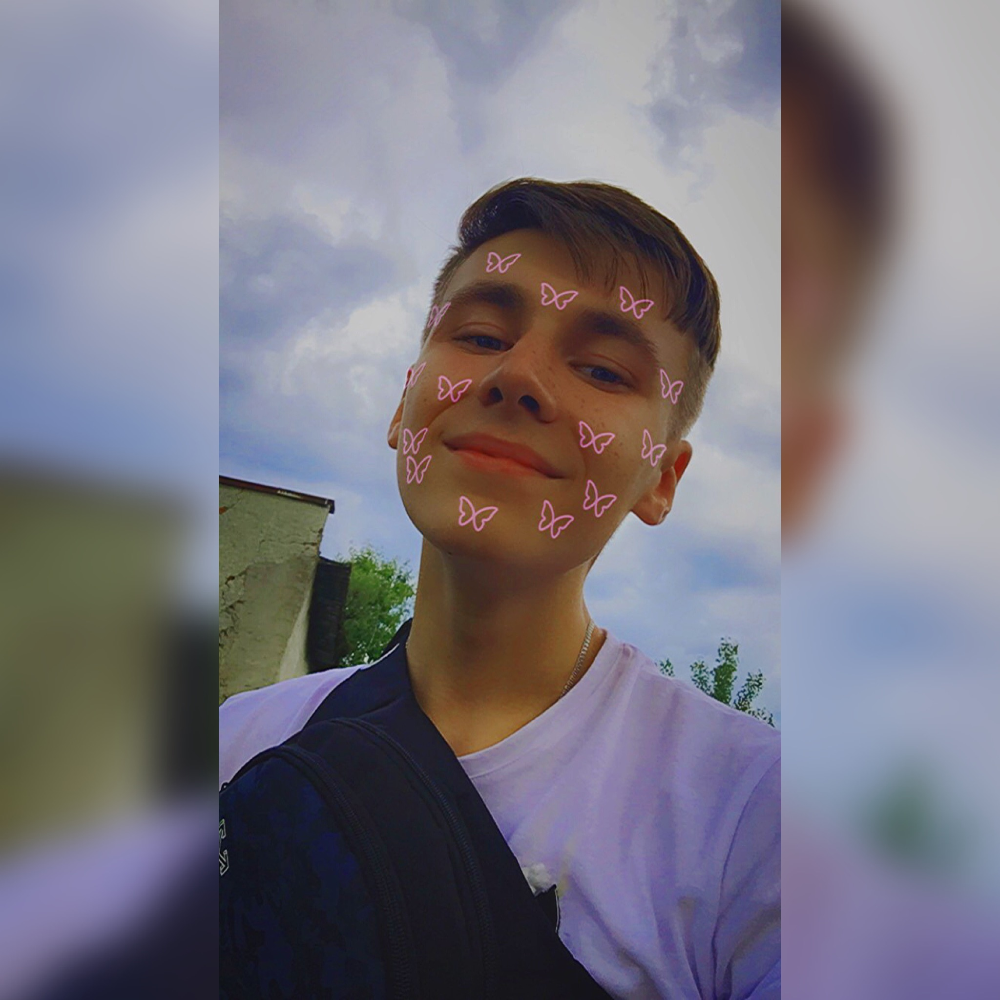

Ціпіньо Артемій
Творець цієї верстки з якої ви читаєте)
Я народився в смт.Дубове, що на Тячівщині. Все життя цікавився електронною технікою, зокрема комп'ютерами, телевізорами. Також полюбляю малювати під музику)
Після дев'ятого класу вступив в ЗПФК на спецільість "Інженерія програмного забезпечення" (програміст-розробник). Протягом двох років охопив багато потрібних знать для будь-якого програміста (будування алгоритмів). Потім після того проходжння ЗНО поступив в УжНУ на спціальність "Інформаційні системи та технології" (база аналітик та веб-програмування).
Даною версткою я хочу перевірити свої вміння в HTML, CSS також чуть-чуть JavaScript, який вивчав сам. Сподіваюся, получиться і надалі повинно получатися і мої старання не підуть марно.
Запам'ятайте ці слова :3
Я народився в смт.Дубове, що на Тячівщині. Все життя цікавився електронною технікою, зокрема комп'ютерами, телевізорами. Також полюбляю малювати під музику)
Після дев'ятого класу вступив в ЗПФК на спецільість "Інженерія програмного забезпечення" (програміст-розробник). Протягом двох років охопив багато потрібних знать для будь-якого програміста (будування алгоритмів). Потім після того проходжння ЗНО поступив в УжНУ на спціальність "Інформаційні системи та технології" (база аналітик та веб-програмування).
Даною версткою я хочу перевірити свої вміння в HTML, CSS також чуть-чуть JavaScript, який вивчав сам. Сподіваюся, получиться і надалі повинно получатися і мої старання не підуть марно.
Запам'ятайте ці слова :3